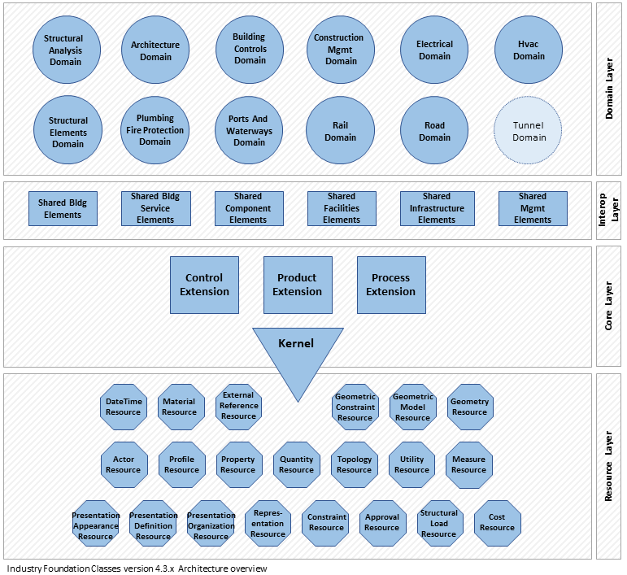

Introduction
This document is an open international standard for sharing information about buildings and civil engineering work as expressed in building information models (BIM). The document comprises:
- A schema (provided in various forms, see scope)
- Documentation (provided in HTML)
- Property and Quantity Set definitions (standardized definitions for an extensibility mechanism realised in the schema - provided in XML)
- Exchange or serialization mechanisms of data files (provided in various forms, see scope
The schema, property and quantity sets and usage constraints are internally authored as a UML Class diagram and published as the following computer interpretable schemata:
- in EXPRESS data specification language, according to ISO 10303-11,
- in XML Schema definition language (XSD), according to ISO 10303-28.
The exchange file formats for exchanging and sharing data according to the computer interpretable schemata are:
- Clear text encoding of the exchange structure, defined in ISO 10303-21,
- Extensible Markup Language (XML), defined in XML Schema W3C Recommendation
Conventions
This document includes terms, concepts and data specification items that originate from use within disciplines, trades, and professions of the construction and facility management industry sector. Terms and concepts use the plain English words, the data items within the data specification follow a naming convention.
- the data item names for types, entities, rules and functions start with the prefix "Ifc" and continue with the English words in CamelCase naming convention (no underscore, first letter in word in upper case);
- the attribute names within an entity follow the CamelCase naming convention with no prefix;
- the property set definitions that are part of this document start with the prefix "Pset_" and continue with the English words in CamelCase naming convention;
- the quantity set definitions that are part of this document start with the prefix "Qto_" and continue with the English words in CamelCase naming convention.
Model View Definitions
Model view definitions (MVDs) may exist as related specifications. The following MVDs for this document are foreseen:
- Reference View
- Alignment Based Reference View
- Design Transfer view
These three MVDs can be seen as three levels of implementation. They are gradual levels adding more advanced features to the implementations.
Architecture
The data schema architecture defines four conceptual layers, each individual schema is assigned to exactly one conceptual layer. The figure below shows the schema architecture of the layered architecture.

- Resource layer — the lowest layer includes all individual schemas containing resource definitions, those definitions do not include a globally unique identifier and they are used independently of a definition declared at a higher layer;
- Core layer — the next layer includes the kernel schema and the core extension schemas, containing the most general entity definitions, all entities defined at the core layer, or above carry a globally unique id and optionally owner and history information;
- Interoperability layer — the next layer includes schemas containing entity definitions that are specific to a general product, process or resource specialization used across several disciplines, those definitions are typically utilized for inter-domain exchange and sharing of construction information;
- Domain layer — the highest layer includes schemas containing entity definitions that are specializations of products, processes or resources specific to a certain discipline, those definitions are typically utilized for intra-domain exchange and sharing of information.
Compatibility
Built assets have a long lifetime. Information about built assets also need to be accessible during a long lifetime. Compatibility between editions of this document is therefore a key concern in its development.